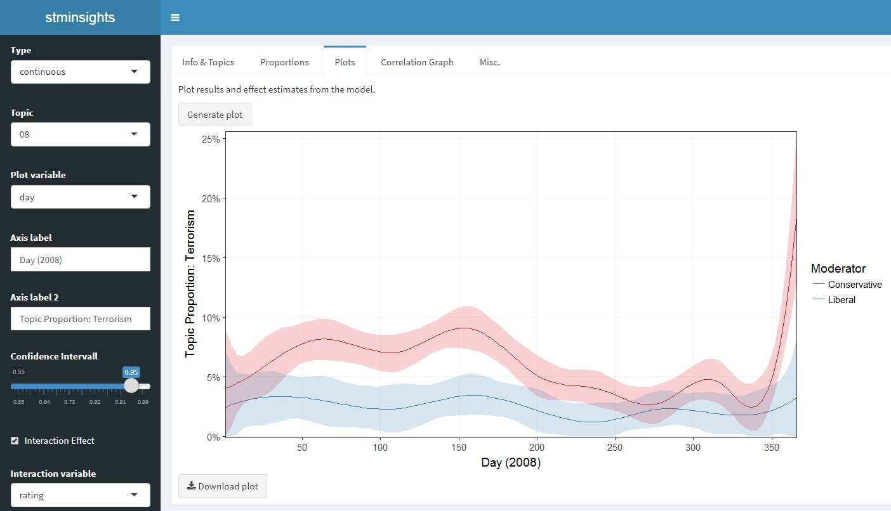

Topic models are widely used statistical models for reducing the dimensionality of textual data. Although the approach is quantitative in nature, model selection and validation of topic model results can be quite labor intensive, as it requires qualitative inspection of many documents and terms. This is were stminsights comes in: the package enables interactive validation, interpretation and visualization of one or several Structural Topic Models (stm). In case you are not familiar with structural topic models, the stm package vignette is an excellent starting point.
Stminsights can be installed from CRAN by running install.packages('stminsights').
You can also download the latest development version of the app by running devtools::install_github('methodds/stminsights').
For Windows users installing from github requires proper setup of Rtools, for which a tutorial is available here.
The main part of stminsights is an interactive shiny application, which requires a .RData file as input. This file should include:
stm objects.estimateEffect objects.out which was used to fit your stm models and contains documents, vocabulary and metadata.As an example, the following code uses the quanteda package to prepare the gadarian corpus for structural topic modeling. Afterwards, two models and estimates effects are computed and all objects required for stminsights are stored in stm_gadarian.RData:
library(stm)
library(quanteda)
# prepare data
data <- corpus(gadarian, text_field = 'open.ended.response')
docvars(data)$text <- texts(data)
data <- dfm(data, stem = TRUE, remove = stopwords('english'),
remove_punct = TRUE) %>% dfm_trim(min_count = 2)
out <- convert(data, to = 'stm')
# fit models and effect estimates
gadarian_3 <- stm(documents = out$documents,
vocab = out$vocab,
data = out$meta,
prevalence = ~ treatment + s(pid_rep),
K = 3, verbose = FALSE)
prep_3 <- estimateEffect(1:3 ~ treatment + s(pid_rep), gadarian_3,
meta = out$meta)
gadarian_5 <- stm(documents = out$documents,
vocab = out$vocab,
data = out$meta,
prevalence = ~ treatment + s(pid_rep),
K = 5, verbose = FALSE)
prep_5 <- estimateEffect(1:5 ~ treatment + s(pid_rep), gadarian_5,
meta = out$meta)
# save objects in .RData file
save.image('stm_gadarian.RData')After preparing the .RData file, the shiny application can be launched with run_stminsights():

Hovering over UI elements displays tooltips that assist users in navigating through the application. Stminsights is organized as a dashboard with five columns that serve different purposes:
Info & Topics:
.RData file, select models and as effect estimatesProportions:
Plots:
Correlation Graph:
Misc:
.RData
Although the shiny application includes several options for exporting and visualizing the output from structural topic models, users may wish to create their own plots in different formats. For such cases stminsights offers three utility functions that can be used outside of the shiny application:
get_effects(): create a dataframe including prevalence effects for one stm modelget_network(): create a tidygraph for a correlation network of stm topicsget_diag(): create a dataframe including statistical diagnostics for several models